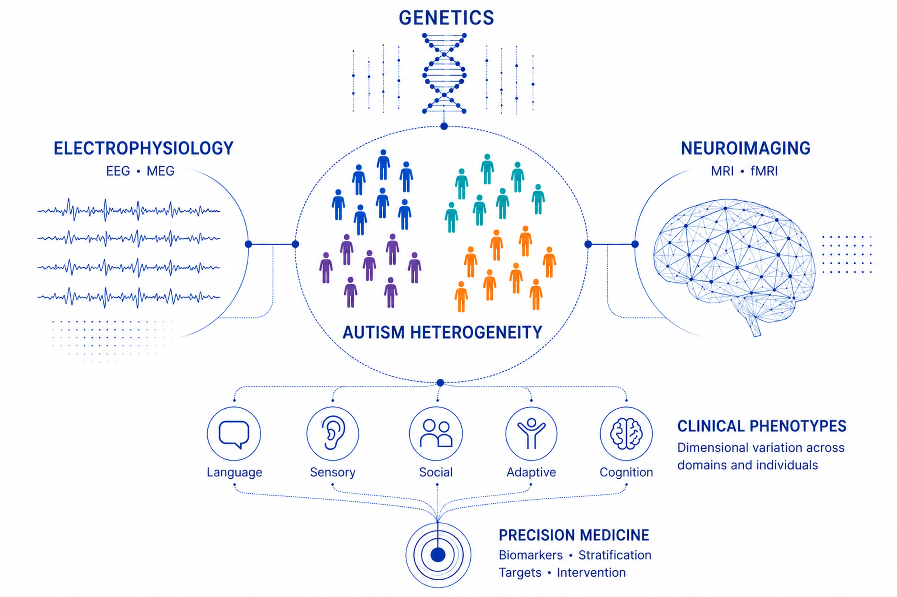
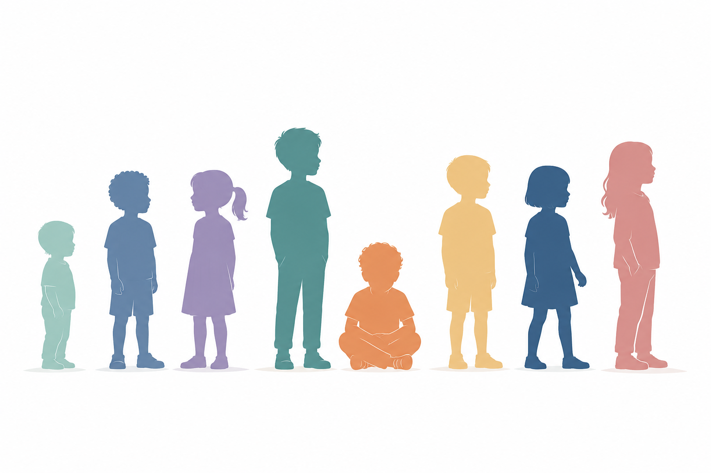
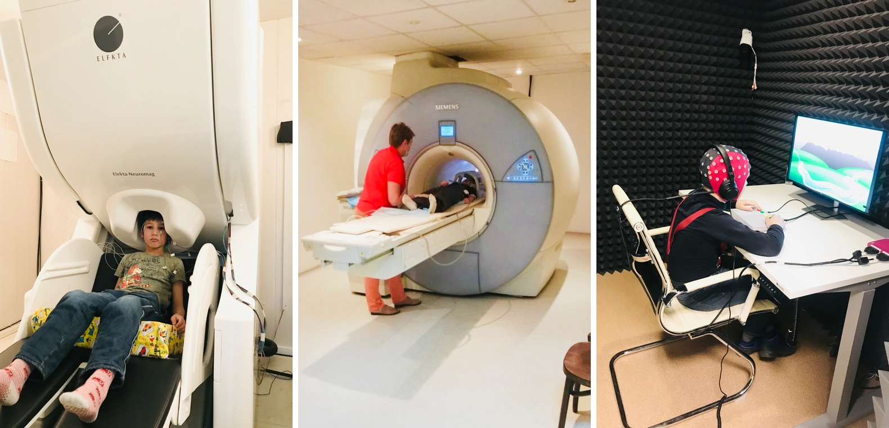
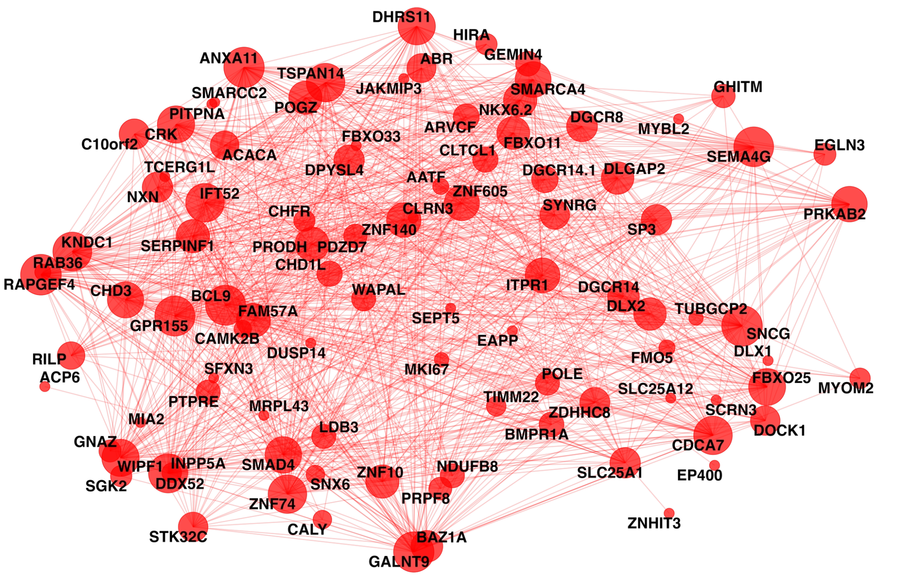
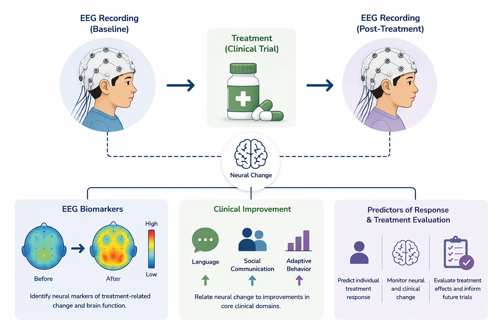

Research Program
Understanding biological heterogeneity in autism and other neurodevelopmental disorders
My research investigates how brain function and genetic architecture contribute to differences in language, sensory processing, adaptive behavior, cognition, and clinical outcomes across autism and related neurodevelopmental disorders and genetic conditions.

Scientific Vision
From clinical diversity to biologically informed understanding
Autism and other neurodevelopmental disorders vary substantially in presentation, development, and behavioral phenotypes. By combining electrophysiology, neuroimaging, genetics, and behavioral assessment, I study the biological factors that contribute to this heterogeneity and how they can support more precise clinical interventions.
Research Areas

Understanding Clinical Heterogeneity
I study why children with autism and other related neurodevelopmental disorders differ in their clinical presentation and developmental trajectories.
I focus on variability in language, social communication, sensory processing, cognition, and adaptive functioning, treating this diversity as a source of insight into distinct developmental and biological pathways.
This provides the clinical foundation for identifying subgroups and dimensional profiles that can be linked to neural and genetic mechanisms.

Characterizing Brain Structure and Function
I use EEG, MEG, and MRI to investigate neural systems supporting sensory processing, language, learning, and development in autism and other neurodevelopmental disorders.
My work examines neural oscillations, auditory and visual processing, functional and structural connectivity, and developmental change across temporal and spatial scales.
I am particularly interested in measures that explain clinical variation, predict outcomes, or capture treatment-related change.

Defining Genetic Architecture
I examine how inherited and de novo genetic variation contributes to heterogeneity in autism and other neurodevelopmental disorders.
I investigate individual variants, copy number variants, familial transmission, gene co-expression networks, and biological pathways to understand how genetic risk influences brain development and behavior.
A major aim is to test whether distinct clinical or neural profiles reflect different forms of genetic architecture.

Clinical Trials and Biomarker Development
I investigate neural and behavioral markers in clinical trials involving autism and related neurodevelopmental and genetic conditions.
My current work uses EEG measures to characterize treatment-related change, identify predictors of response, and examine how changes in brain function relate to improvements in language, sensory processing, and other clinical outcomes.
The goal is to develop biologically informed measures that strengthen participant stratification, outcome prediction, and evaluation of treatment effects while complementing, rather than replacing, clinical assessment.